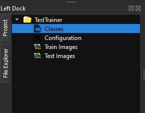

1. Setting tool
Click [Setting] button to open Setting dialog.

Choose Darknet's execution file and setting arguments value same as above image.
XImageTrainer is a free tool using for preparing image data and collabrate with other DeepLearning framework to train the dataset. Currently, it's can work well with darknet and yolo.
Download the last releases at below
Supported Deeplearning framework
Click [Setting] button to open Setting dialog.
Choose Darknet's execution file and setting arguments value same as above image.
Click [New Project] button to open Add Project dialog.
Enter project's name and workspace's directory. After generating, a new project's structure consist of Classes, Configuration, Train Images, Test Images.
Right click on [Classes] and choose [Edit Class Categories] to open Edit Class dialog. Enter new class name on each row.

Right click on [Configuration] and choose [Edit Configuration] to open Configuration dialog.